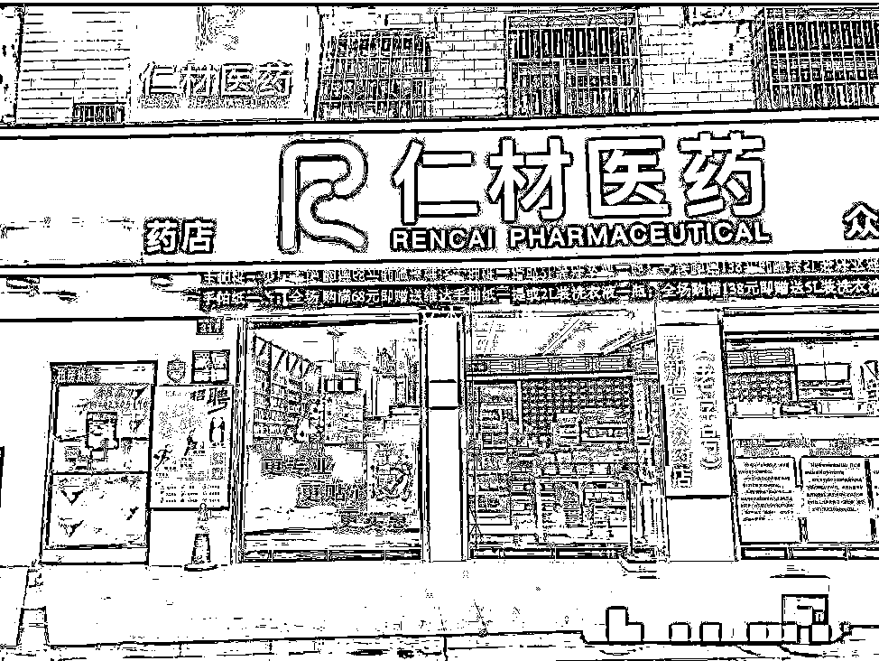
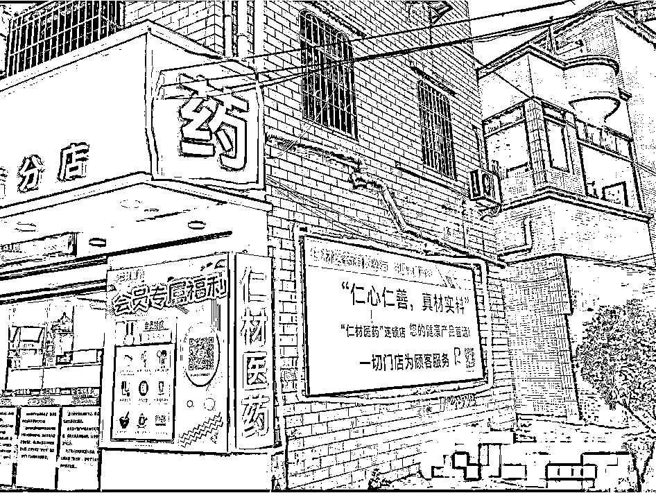
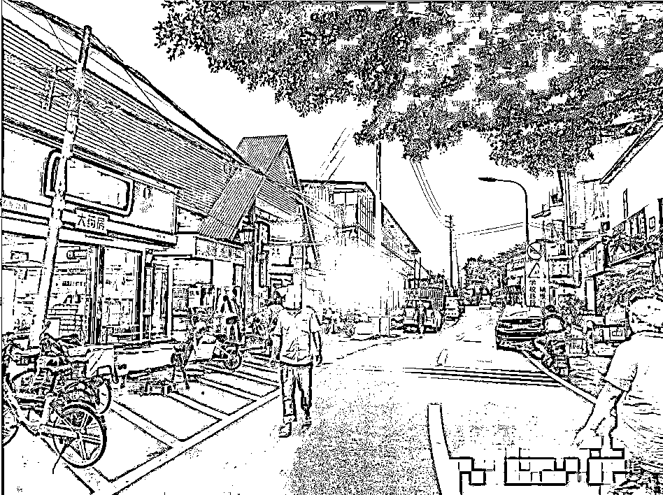
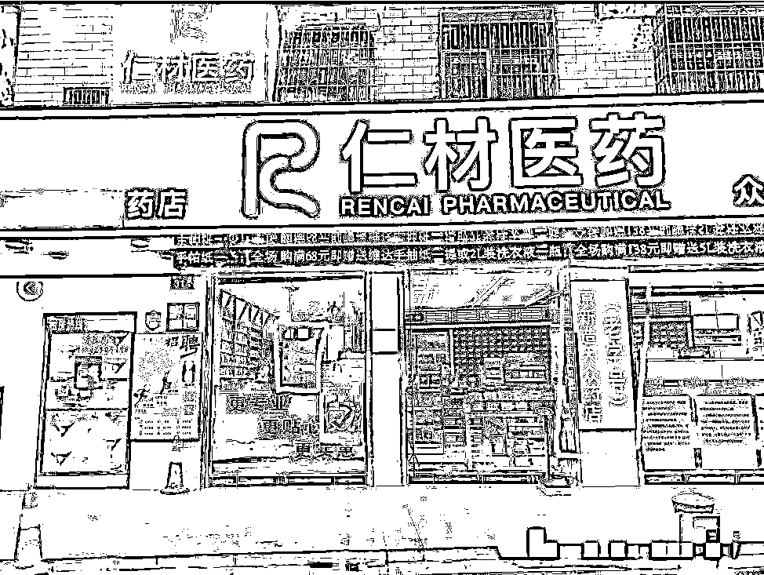
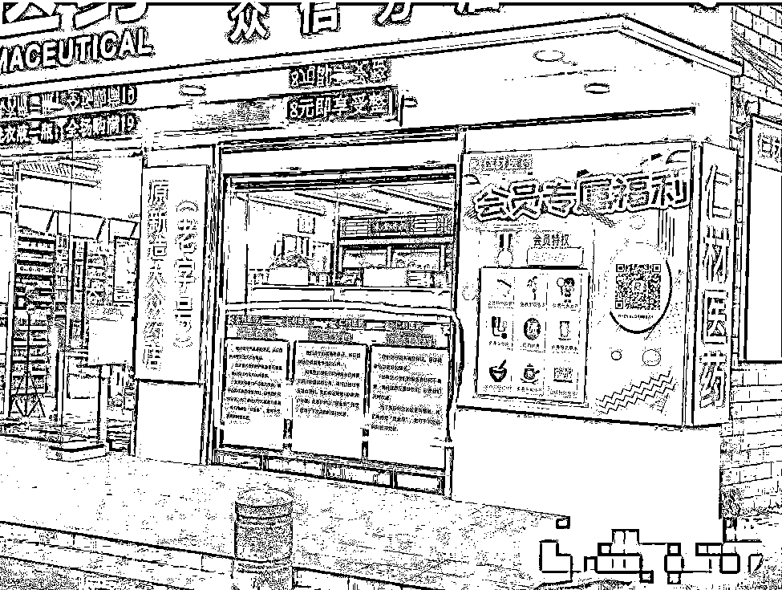
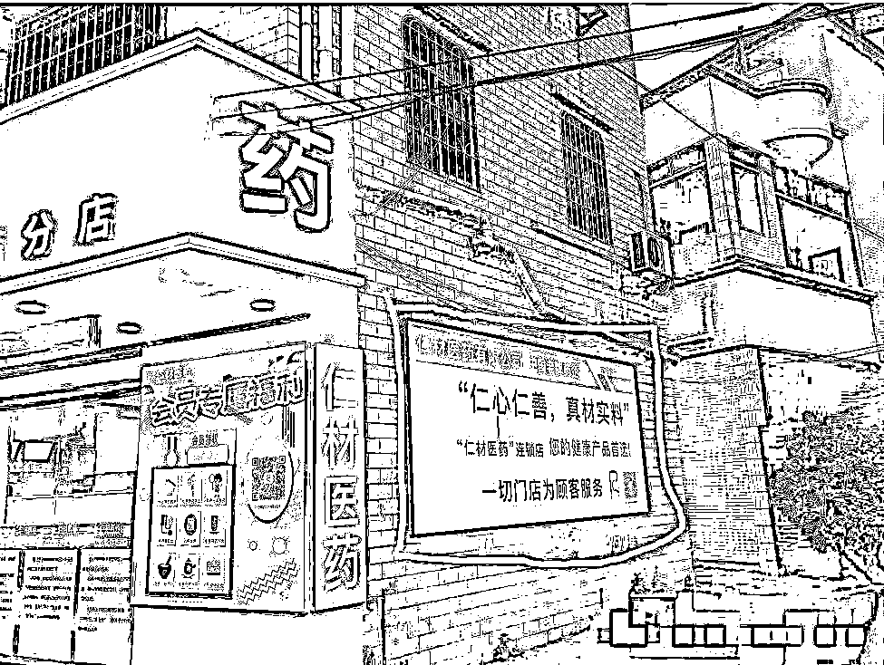
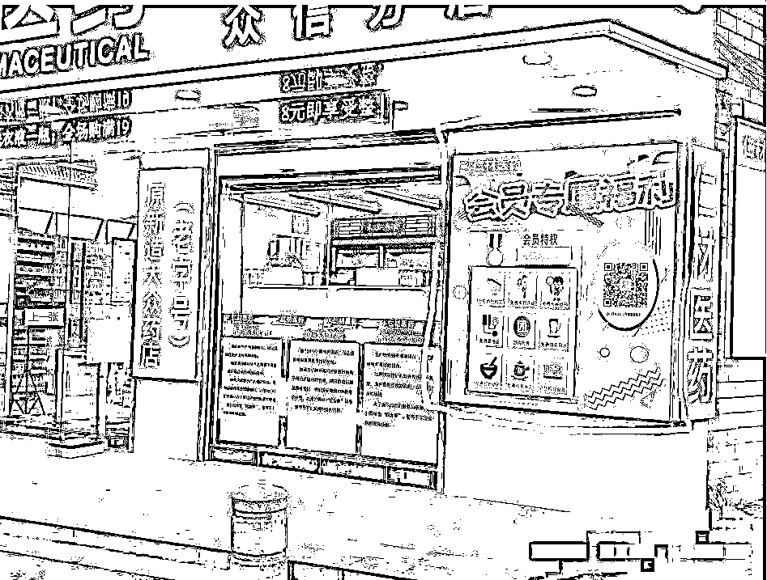
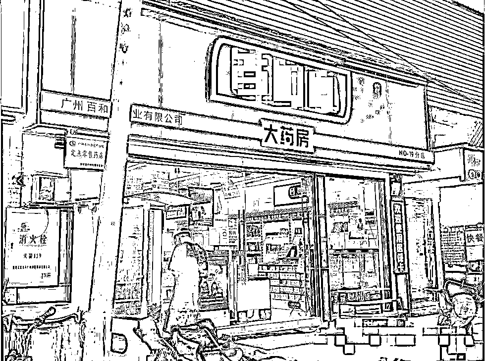

来源：https://h24wtd3rug.feishu.cn/docx/QdPkd1IM2orhqFxaAXCcM6fynsc
经常有人问：选了好位置，为此付出了昂贵的租金，但客户就是不进店，怎么办？
那为什么顾客不进店？
今天我用一个例子来探讨一下。
下面这家仁材药店，是我在偶然之间看到的，看到后我足足站在它门店面看了30分钟，拍了很多的图片，为说它极具竞争力？我们可以从以下几点说起。
一、转化第一步
先问大家一个问题：在面对流经门店的客户，转化的第一步是啥?
转化的第一步：让他们先注意到我们，看向我们。
是的，就是这么简单，但是我们做到最大限度的让客户注意到我们吗?
我们可以看到，这家药店在让客户注意上做的有多棒！
【180度灯光展示，最大限度曝光自己】
1.从图1来看，这家店是正常的招牌，LED灯，招牌下还有一些灯箱，看起来和其余门店类似。

图1

图2
2.看向图2，我们发现了边角的使用吗？
招牌的拐角位，有一个大大的“药”字，药字下方还有一个灯箱“仁材医药”的灯箱，面向这个仁材医药旁边，还有一个超大的灯箱，上面展示了仁材医药有限公司，服务口号等。
别小看这些服务口号，简单的服务口号，别人有，而你没有，就比你好一点，在注重服务的客户面前，选择你的概率就高一点。有时候我们常说的“人无我有”，这些范范的服务口号也可以是“人无我有”。

图3
3.看向图3，我在远离它约50米处，它的竞争对手旁拍下了这张图片，这家药店靠近内巷，在位置上已处于较偏倚，而且竞争对手还比自己开的早，位置开的好，但这个细节点，就让它在最大范围内曝光，争夺客户。
算一笔账，一个“药”字灯箱预计500-800元，24小时亮灯，每天电费5元。每一天争取一位客户，利润10元，160天后成本回收，160天后每天能净增长5元利润。如果没有这个灯箱，每天利润损失10元，一年下来，损失的费用达3650元。
以上服务口号，常亮灯光、多用灯箱等环节，每个环节都给他加上概率，那么在特定人群的捕捉上，就比别人优。
数可能算的简陋，在这里我想表达的是：“尽一切办法抢夺客户的注意，才有机会赢得客户的转化”，不然，同样的人流门头，别人每天比你赢得多一位顾客，一年后，可能赢得的不止是365位客户。
先让客户注意到你，才有机会进行转化，别错把转化理解成单一名词。
二、转化第二步
我们知道了转化第一步是让客户注意到我们，那第二步呢？
第二步是解决“客户疑问，建立信任”。
我们来看看这家药店如何解决客户信任，赢得转化。
1.【激发兴趣】：因为药店解决的需求比较明确，“兴趣”变为“需求”。从门店灯光最大限度告知客户，这里也有一家药店，赢得注意力。

图4
2.【老字号建立地缘联系】，在门店招牌图4下方有一个“原新造大众要店（老字号）”的灯箱，用来展示药店的身份，建立与当地隔街相连的关系，告诉客户：“我们是本地连锁药房”。

图5
3.【承诺保证】：（图五）老字号灯箱右下方是三个承诺，总结起来是“100%退货；价格高于同行给同等价格现金券；服务不周到给予返还现金券”。

图6
4.【我们是谁】：图6告知客户，我们是谁，我们为人怎么样，我们的服务的价值观是什么。
整个门店门头围绕“服务、价格、身份来源”三大点，对客户解释说明，赢得客户信任。
信任的元素可以写出来，让客户一眼就能知道，别一味要等待客户尝试你的产品听你口述才能知道，既降低客户决策成本，还赢得客户信任。
三、转化第三步
到了这一步，你已和客户建立初步信息，需要立即推动客户转化下单，促进的手段有很多，我们可以回到这家药店看看它怎么做的。
图7

图8
1.【互惠转化】：我们可以看到图七左下方，一张黄色优惠告示，告知客户优惠信息，促进客户下单；在图八，还有一个用灯箱来展示会员专属福利，里面用图文的信息告知了客户会员的信息及优惠，还贴心的附上二维码，双重的优惠信息，让客户一眼就能了解，举手就能申请，极大的促进客户进店下单。
以上某些地方其实具备双重属性的，例如会员信息灯箱，既可以激发兴趣，还可以产生互惠促进下单。
明白互惠的信息需要建立在客户对你感兴趣，愿意信任你的情况下，转化才更有效。
整个总结，我们可以用陈勇老师的公式：激发兴趣-建立信任-立即下单。
如果需要了解公式上的问题的，可以找到陈勇老师写的“超级转化率：如何让客户快速下单”相信你看完会有极大的收获。

图9
最后再来对比它的竞争对手（图九），你可以看到，没有什么优惠信息，也没有什么服务承诺，更没有建立信任感，对比衡量，两家药店，你更愿意在哪家下单呢？
这家药店我没有进去，但是它的门头却深深的吸引了我，整个店面的门头做了大量的灯箱，但每个灯箱都有明确的功能，从曝光到转化形成了一个滑滑梯，让客户就像坐滑梯，自然的滑到店内，然后下单。
现在线下门店生意越发难，我们都在寻求新流量，在这里我看到的基于线下本身的位置，通过一些常用的方式，也能很好的提高整个门店转化率，提升营业额。
希望这篇文对大伙有帮助，可以拿来参考，提升自己门店线下转化，提升营业额，度过我们面临的内卷时代。